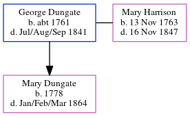

George Dungate c1761 - 1841
[ Home ] | [ Calendar ] | [ Surnames Index ] | [ Census Index ] | [ Family History ]George Dungate, the 5 times great-grandfather of Nigel Horne, was born in Adisham, Kent, England c. 17611 and married Mary Harrison (with whom he had 1 child, Mary) in Adisham on Sep 2, 17813. On Jun 6, 1841, he was living at his birthplace1.
He died in Jul/aug/sep 1841 in Kent, England2.
Children
- Mary was born in 1778
Citations
- 1841 England Census Online publication - Provo, UT, USA: The Generations Network, Inc., 2006.Original data - Census Returns of England and Wales, 1841. Kew, Surrey, England: The National Archives of the UK (TNA): Public Record Office (PRO), 1841. Data imaged from the National
- England & Wales, FreeBMD Death Index: 1837-1915 Online publication - Provo, UT, USA: The Generations Network, Inc., 2006.Original data - General Register Office. England and Wales Civil Registration Indexes. London, England: General Register Office. © Crown copyright. Published by permission of the Cont
- England, Select Marriages, 1538–1973 Ancestry.com Operations, Inc.
Family Tree
Generated by ged2site. Last updated on Jun 11, 2024